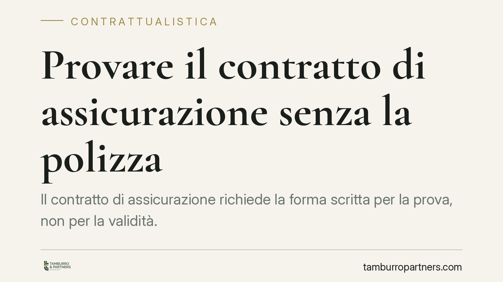

Provare il contratto di assicurazione senza la polizza
Il contratto di assicurazione richiede la forma scritta per la prova, non per la validità. Questo significa che l'assicurato può dimostrarne esistenza e contenuto anche con documenti diversi dalla polizza. La Cassazione è tornata sul tema, chiarendo entro quali limiti opera la prova per iscritto e quando è ammessa la prova testimoniale. Un punto rilevante per chi ha smarrito la polizza.

Il caso e la questione
La disciplina della prova del contratto di assicurazione torna periodicamente all'attenzione dei giudici di legittimità. Il nodo è ricorrente: l'assicurato che non dispone del documento originale può comunque far valere il rapporto? E fino a che punto può ricostruirne il contenuto, cioè le clausole, i massimali e le franchigie?
La Corte di Cassazione ha ribadito un principio consolidato: la prova del contratto di assicurazione può essere raggiunta anche attraverso documenti diversi dalla polizza, purché aventi natura scritta. Trattandosi di orientamento assestato, ciò che conta è la regola, più che la singola pronuncia.
> Nota redazionale: i riferimenti puntuali della pronuncia (Sezione, numero e data) vanno verificati sulla fonte prima di ogni utilizzo. Non riportiamo qui un estremo non confermato.
Inquadramento normativo
Il riferimento centrale è l'art. 1888 del codice civile, rubricato "Prova del contratto e delle sue modificazioni". La norma stabilisce che il contratto di assicurazione deve essere provato per iscritto.
Qui si colloca una distinzione fondamentale, spesso fraintesa.
- Forma ad substantiam: quando la legge richiede la forma scritta per la *validità* stessa dell'atto. In sua assenza, il contratto è nullo.
- Forma ad probationem: quando la forma scritta serve solo a *provare* l'esistenza del contratto in giudizio. L'atto è valido anche senza documento, ma la sua dimostrazione incontra limiti processuali.
L'assicurazione appartiene alla seconda categoria. Il contratto esiste ed è valido anche in assenza della polizza; ciò che si complica è la sua dimostrazione in causa.
Da qui la portata dell'art. 2725 c.c.: quando un contratto deve essere provato per iscritto, la prova per testimoni è ammessa solo in casi eccezionali. In particolare, resta escluso il ricorso ordinario ai testimoni per provare l'esistenza del rapporto.
Questo limite, però, non è assoluto. La confessione e il giuramento restano ammissibili e superano la barriera dell'art. 2725 c.c.: sono mezzi di prova che non incontrano la preclusione riservata alla prova testimoniale.
Va poi ricordata l'eccezione dell'art. 2724 c.c.: quando il contraente ha perduto senza sua colpa il documento che gli forniva la prova, la prova per testimoni è ammessa. È l'ipotesi tipica dello smarrimento incolpevole della polizza.
Cosa cambia in concreto
Per l'assicurato la conseguenza pratica è duplice.
Primo: l'assenza fisica della polizza non estingue il diritto. Si può ricorrere ad altri documenti scritti — proposta accettata, quietanze di pagamento del premio, corrispondenza, appendici, comunicazioni della compagnia — per dimostrare che il contratto esiste.
Secondo, e più delicato: provare l'*esistenza* del contratto è cosa diversa dal provarne il *contenuto*. Ricostruire che una copertura era attiva è un conto; dimostrare l'esatto perimetro delle clausole, il massimale, le franchigie e le esclusioni è un altro. È proprio sul contenuto che si giocano i contenziosi con le compagnie, ed è su questo che la documentazione frammentaria mostra i suoi limiti.
Per la compagnia, specularmente, la ricostruzione documentale diventa lo strumento con cui l'assicurato può colmare una lacuna probatoria altrimenti insuperabile.
Cosa fare in concreto
- Conservate ogni documento collegato alla polizza: proposta, condizioni generali, appendici, quietanze del premio e comunicazioni della compagnia. Ciascuno può concorrere alla prova.
- In caso di smarrimento, ricostruite subito la vicenda: attivatevi presso la compagnia per ottenere copia del contratto e documentate lo smarrimento, così da poter invocare l'eccezione dell'art. 2724 c.c.
- Distinguete esistenza e contenuto: verificate di poter dimostrare non solo che la copertura c'era, ma anche massimali, franchigie ed esclusioni applicabili.
- Valutate confessione e giuramento: sono mezzi di prova che superano il limite dell'art. 2725 c.c. La loro attivazione va ponderata con l'assistenza di un legale.
- Agite tempestivamente: la raccolta della documentazione va avviata prima che i termini di prescrizione e le difficoltà pratiche di reperimento rendano più oneroso l'onere probatorio.
Consigliamo, in ogni controversia sul rapporto assicurativo, di mappare da subito il materiale documentale disponibile e di impostare la strategia probatoria in funzione del punto realmente contestato.
Contributo informativo a cura di Tamburro & Partners Avvocati - Avv. Giuseppe Tamburro. Non costituisce parere legale.
Ogni contratto ha il suo equilibrio.
Se vuoi una revisione delle clausole o una redazione su misura, scrivi allo studio. Ti rispondiamo entro un giorno lavorativo.